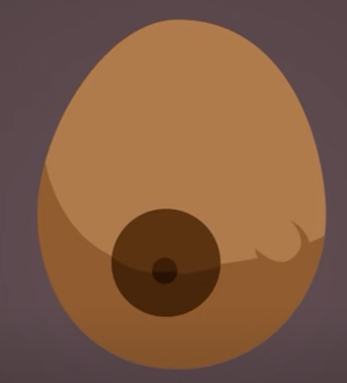
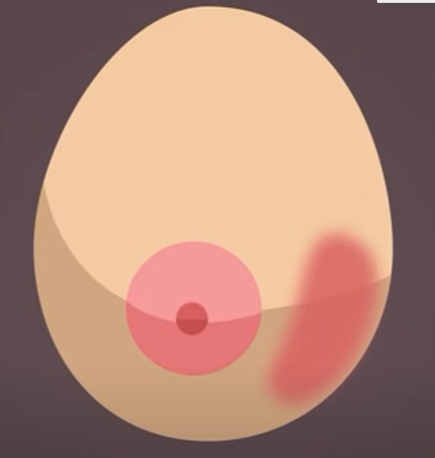
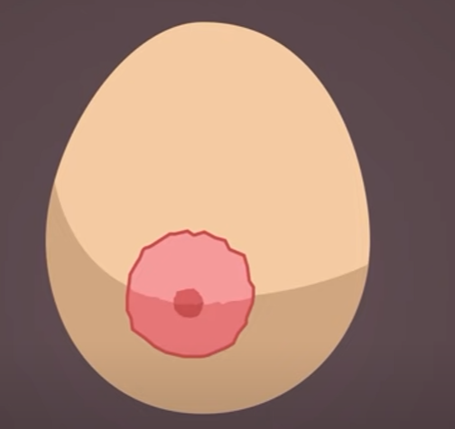
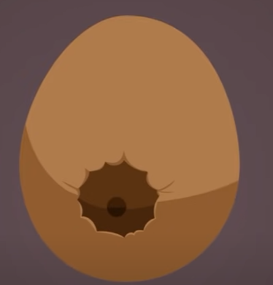
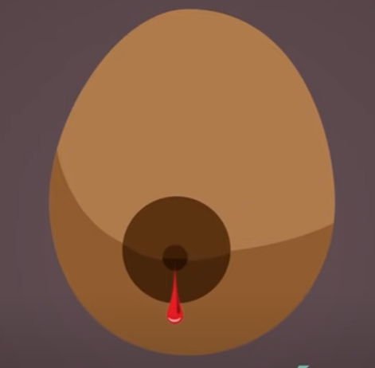
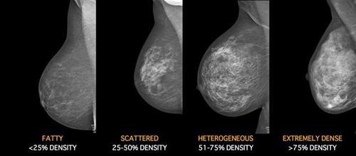
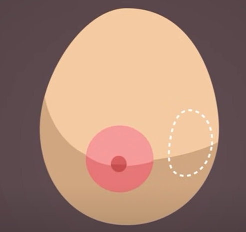

Google Fonts
¿Cuales son los simtomas?
Los signos de advertencia del cáncer de mama pueden ser distintos en cada persona. Algunas personas no tienen ningún tipo de signos o síntomas.
Algunas señales de advertencia del cáncer de mama son:
Un bulto nuevo en la mama o la axila (debajo del brazo).

Irritación o hundimientos en la piel de la mama.

Enrojecimiento o descamación en la zona del pezón o la mama.

Hundimiento del pezón o dolor en esa zona.

Secreción del pezón, que no sea leche, incluso de sangre.

Cualquier cambio en el tamaño o la forma de la mama.

Dolor en cualquier parte de la mama.

Acontinuación en el siguente video te mostraremos como se tiene realizar la autoexploración para evitar el cácer de mama